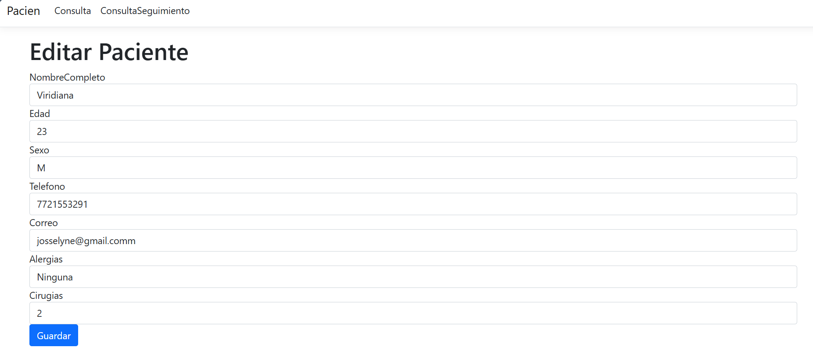
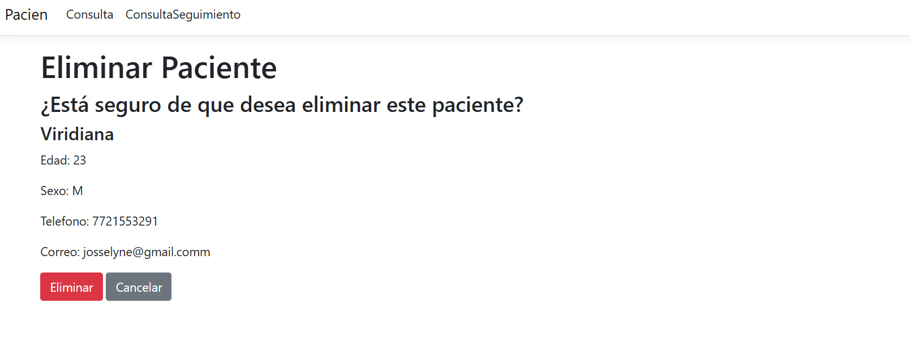

Se realizó el formulario Paciente que permite interactuar con el subsistema mediante un CRUD.
El formulario incluye campos para capturar información; nombre, edad, sexo, teléfono y correo electrónico. Cada campo está etiquetado para facilitar la comprensión del usuario.
Botones de Acción: Se incluyen botones para acciones como "Eliminar", "Cancelar", "Guardar" o "Editar".
El usuario llenará los siguientes campos para crear:
Actualizar a un paciente permite tener información más actual de lo que se desee. Solo se podrá manipular por el usuario autorizado.
Eliminar un paciente en el sistema es esencial para mantener la precisión de los datos. Esto permite eliminar registros duplicados, corregir errores y asegurar que la información almacenada sea relevante y actualizada.
